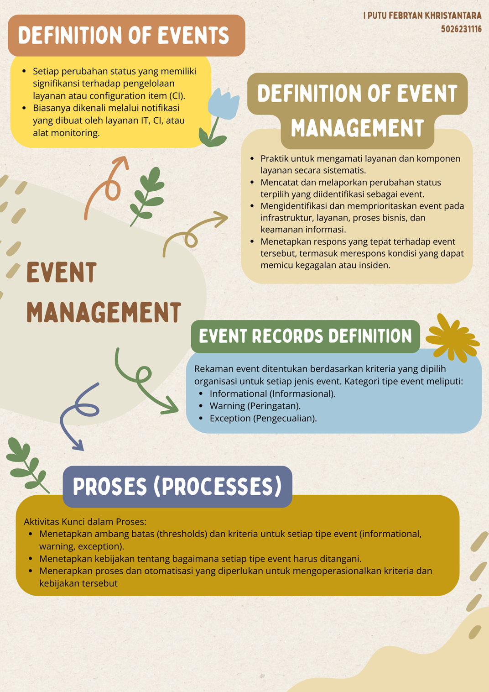
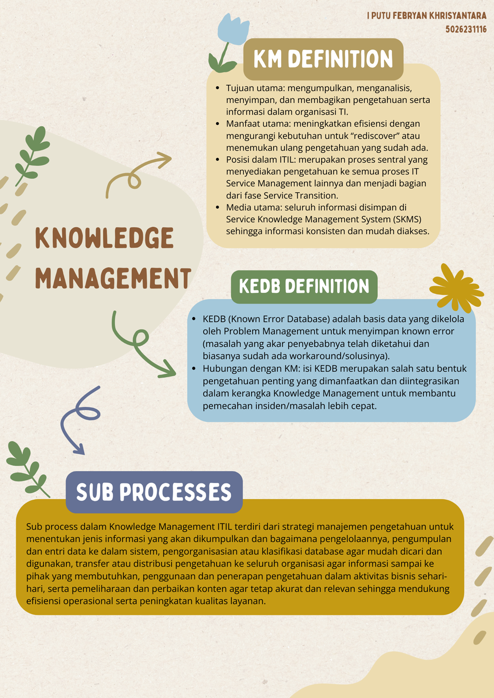
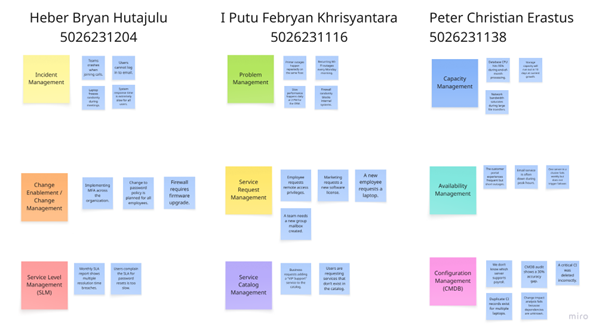
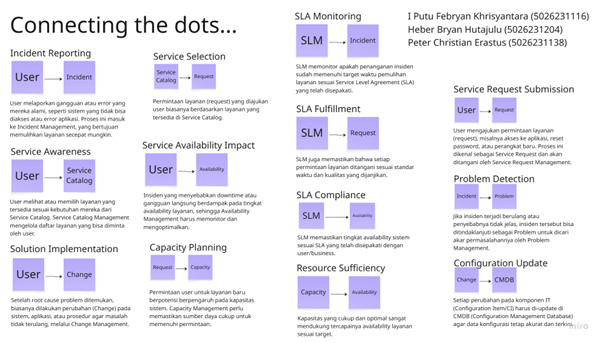

Ringkasan (Summary)
Materi Minggu ke-14 difokuskan pada dua disiplin vital dalam operasional ITSM: Event Management dan Knowledge Management (KM).
Event Management berperan sebagai sistem deteksi dini yang memantau perubahan status pada infrastruktur TI, mulai dari proses monitoring, penyaringan (filtering), korelasi, hingga penutupan event. Tujuannya adalah merespons anomali secara proaktif sebelum berdampak pada layanan.
Sementara itu, Knowledge Management menekankan pada pengelolaan aset intelektual organisasi melalui dokumentasi sistematis, termasuk pemanfaatan Known Error Database (KEDB) untuk mempercepat resolusi insiden dan memastikan pengetahuan tersimpan serta mudah diakses.
Event Management

Event Management didefinisikan sebagai proses pemantauan perubahan status yang signifikan pada Configuration Item (CI) atau layanan TI. Proses ini mengubah notifikasi mentah menjadi tindakan yang terukur melalui tahapan berikut:
- 1. Maintenance of Monitoring: Penyusunan aturan dan ambang batas (threshold) agar alat monitoring hanya mendeteksi data yang relevan.
- 2. Filtering & 1st Level Correlation: Tahap eliminasi noise (informasi tidak penting) dan pengelompokan event serupa untuk efisiensi.
- 3. 2nd Level Correlation & Response: Analisis mendalam untuk menentukan konteks masalah dan memilih respons yang tepat, apakah itu perbaikan otomatis atau eskalasi ke manajemen insiden.
- 4. Review & Closure: Evaluasi pasca-penanganan untuk memastikan efektivitas respons dan penutupan pencatatan event record.
Knowledge Management (KM)

KM adalah praktik memastikan informasi yang tepat tersedia bagi orang yang tepat pada waktu yang tepat.
KEDB (Known Error Database)
Repositori vital yang menyimpan solusi permanen atau sementara (workaround) untuk masalah yang sudah teridentifikasi, mempercepat kinerja Service Desk.
Siklus Proses KM
Meliputi Data Entry (pencatatan pengetahuan yang valid), Database Organisation (strukturisasi agar mudah dicari), dan Utilisation (pemanfaatan pengetahuan untuk troubleshooting atau pelatihan).
Dokumentasi Kerja Kelompok


Refleksi Pembelajaran
Minggu ini memberikan pemahaman mendalam tentang pentingnya transisi dari reaktif ke proaktif melalui Event Management. Saya mempelajari mekanisme teknis bagaimana event disaring dan dikorelasikan untuk mencegah insiden besar.
Di sisi lain, Knowledge Management mengajarkan saya bahwa dokumentasi bukan sekadar administrasi, melainkan aset strategis. Penggunaan KEDB dan manajemen database yang rapi terbukti krusial dalam memotong waktu resolusi masalah dan menjaga standar layanan tetap tinggi.